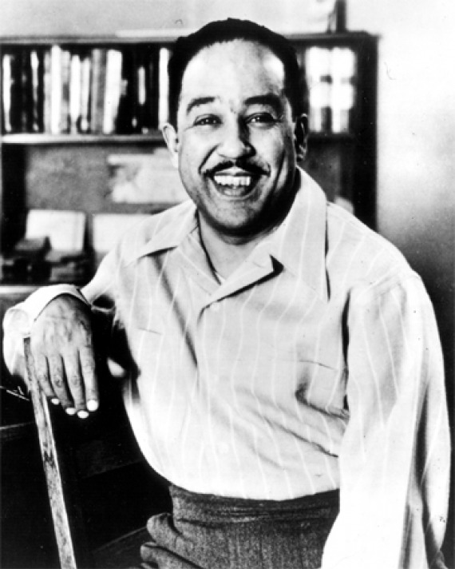

Born in 1902, James Mercer Langston Hughes grew up in various areas around the United States before he settled in Cleveland, Ohio. Lincoln began writing poetry when he was about thirteen years old. After graduating high-school, spending time in Mexico, Africa, and Europe, attending a year at Columbia University, and working miscellaneaus jobs he moved to Washington D.C. and finished his first book of poetry in 1926. From then on Hughes wrote short stories, plays, and novels to accompany his poetry. He was a large contributor to the Harlem Renaissance in the 1920's. Langston Hughes lived a successful life and died in New York during 1967. East 127th street in New York was renamed Langston Hughes Place and his work continues to be influential and memorable.
An example of a Langston Hughes poem is "So Tired Blues"